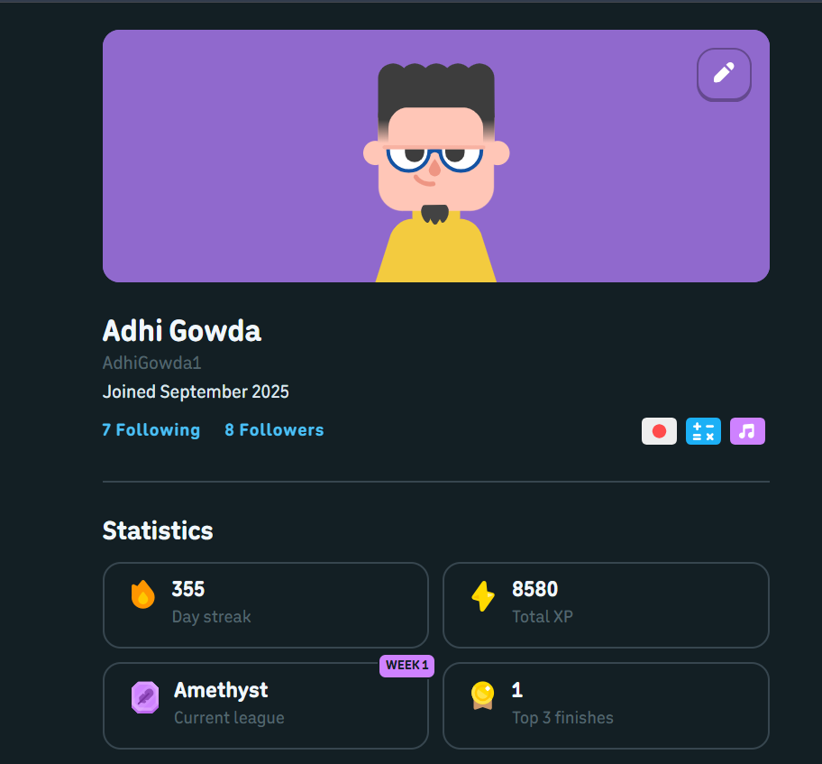

AI, IoT & Safety
RoadRisk AI
Web-based intelligent road safety analysis tool using AI and telemetry data visualization to detect road hazards and predict accident-prone zones in smart cities.
Cloud & Security Specialist · AI Developer · Community Builder
2nd-Year B.Tech Computer Science student at Jain University. "I cook on GitHub at night. Just like Batman, but with more git pushes."
Welcome to Adhi Gowda's Space.
Adhi · Explore real projects, research papers & technical systems:
> WHOAMI.SH
I am a 2nd-year Computer Science Engineering student specializing in Cloud & Security at Jain University. I like Linux, cloud infrastructure, networking, and full stack development — making systems do things they probably shouldn't.
Good with people, comfortable with technology, and currently doing my best to build useful stuff before AI takes over...
const adhi = {
name: "Adhi Gowda",
education: "B.Tech CSE (Cloud & Security), Jain University",
roles: ["President @ CRCE", "Club Lead @ FOSS (FSMK)", "Secretary @ GRI"],
certifications: ["OCI 2025 Networking Pro", "AWS Cloud Practitioner"],
specialization: ["Linux Systems", "V2X Research", "AI & RAG", "DevOps"],
available: true
};
// Execute engineering pipeline
adhi.buildUsefulSystems();

"I am vengeance. I am the night.
I am debugging in production."
> LS PROJECTS/
Real engineering projects built by Adhi Gowda. Click to explore on GitHub or click "+ Add to message" to discuss them.
Web-based intelligent road safety analysis tool using AI and telemetry data visualization to detect road hazards and predict accident-prone zones in smart cities.
Neural retrieval-augmented generation (RAG) system with semantic chunking over classical texts (Bhagavad Gita & Garuda Purana), multi-stage query classification, and context synthesis.
Lightweight Linux monitoring and automation toolkit in Python and Bash for tracking CPU/RAM bottlenecks, disk I/O, process tree analysis, and automated alerts.
Experimental observability toolkit for tracing system calls, analyzing kernel subsystem states, memory allocations, and performance anomalies under stress loads.
Nostalgic, pixel-inspired web experience recreating the classic FLAMES game with retro pixel-art aesthetic, sound effects, and smooth client-side state handling.
A comprehensive documentation repository and hands-on lab experiments exploring TCP communication, DNS, HTTP, AWS Linux Server playbooks, and WSL setup.
Browser-based procedural image processing utility that sorts, shuffles, and manipulates pixel arrays on the HTML5 Canvas in real time.
Curated platform concepts for student developers to discover competitive hackathons, find project teammates, and track collegiate hackathon submissions.
> LS PUBLICATIONS/ & SCHOLAR
Academic research by Adhi Gowda focusing on autonomous self-healing firmware, lightweight transformer models on edge nodes, and collaborative emergency response ecosystems.
Proposing a low-latency Vehicle-to-Everything (V2X) architecture that coordinates sensor data across moving vehicles and urban edge road units to dispatch instant emergency services upon multi-point collision validation.
An autonomous recovery framework leveraging lightweight quantized transformer models running on resource-constrained micro-edge nodes to repair corrupted or compromised firmware without taking vehicle subsystems offline.
> CAT LEADERSHIP_EXPERIENCE.LOG
Active roles across technical societies, research centers, and open-source movements.
Directing student operations, driving technical initiatives, and coordinating collegiate activities across departments.
Leading open-source advocacy, Linux workshops, and developer meetups to empower students with freedom-respecting software.
Organizing scientific initiatives, mentoring student researchers, and coordinating grassroots research publications.
Managing inter-collegiate technical symposiums, hackathons, and corporate speaker sessions.
Fostering industry alliances, organizing campus recruitment drives, and demonstrating student technical portfolios to recruiters.
Building rapid prototypes in high-pressure 24–48hr environments spanning AI safety, aerospace, and web systems.
> SYS.SKILLS & VERIFIED_CERTS
Oracle Cloud Infrastructure · Advanced Cloud Network Topology, VCN Architecture, Security Lists & Gateway Routing
Amazon Web Services · Core Cloud Services, IAM, Security, EC2, S3, RDS & Well-Architected Framework
JavaScript, TypeScript, React, Next.js, Node.js, Python, FastAPI, SQL, REST APIs
Building responsive web applications, interactive dashboards, and scalable backend services with end-to-end integration.
Python, YOLO, MobileNetV2, Rasa, RAG Pipelines, Embeddings
Building intelligent systems for real-time object detection, telemetry classification, and conversational RAG assistants.
AWS, Oracle Cloud (OCI), Linux Kernel, TCP/IP, DNS, Bash, Docker
Deploying, configuring, and hardening Linux servers, containerizing services, and managing cloud network infrastructure securely.
Git, GitHub, VS Code, Postman, Linux WSL, Figma
Disciplined version control, automated CI/CD pipelines, API testing, and collaborative engineering workflows.
> REAL-TIME TELEMETRY
> ./CONNECT.SH
Whether you want to discuss cloud infrastructure, collaborate on research, or discuss engineering roles — feel free to connect!